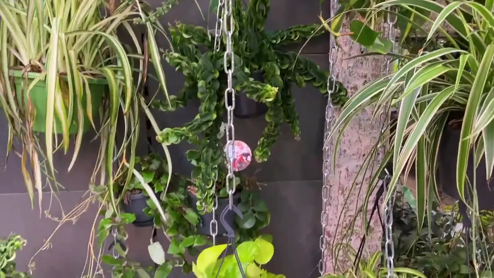

Grow Pothos in medium to bright indirect light, water after the upper mix dries, and use a pot with drainage. Trim sparse vines above a node and propagate node-bearing cuttings. Move it closer to a window in Dutch winter and reduce watering as growth slows.

Care at a glance
| Light | Medium to bright indirect light; tolerates lower light with slower, less variegated growth |
|---|---|
| Water | After the upper mix partly dries; soak and drain |
| Soil | Ordinary airy houseplant mix in a draining pot |
| Habit | Trail it, or support it to encourage larger mature foliage |
| Safety | Calcium oxalate makes it irritating if chewed; keep away from children and pets |
How to keep a Pothos full
Long bare sections usually reflect low light, age or a vine searching for better conditions. Move the plant closer to useful daylight, then prune above a node. Root healthy cuttings and return several to the original pot once established. New growth will not refill every bare point on an old vine.
Variegated cultivars need enough light to maintain contrast. Avoid harsh unacclimated summer sun, but do not hide them in a dark corner and expect strong marbling.
Watering without drama
Feel the mix, lift the pot and observe the leaves. A temporary droop can signal thirst, but repeated dramatic wilting stresses the plant. Yellowing with persistently wet compost calls for a root-zone check, not more water. Empty the outer pot after watering.
In winter, a Pothos several metres from a Dutch window may use water very slowly. A brighter position is often a better solution than simply extending the gap indefinitely.
Propagate a node, not just a leaf
Cut a healthy section so each piece has at least one node, the small joint where a leaf and aerial-root nub emerge. Root it in water or a lightly moist medium under bright indirect light. A decorative leaf without a node may remain alive for a while but cannot form a complete new vine.
Common signs
- Small new leaves: check light, nutrition during active growth and root space.
- Loss of variegation: increase light gradually; genetics also matter.
- Black or mushy sections: inspect for cold or root stress.
- Brown dry patches: check direct sun, severe drying and physical damage.
- Sticky leaves or bumps: inspect carefully for scale or other sap-feeding pests.